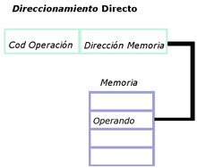
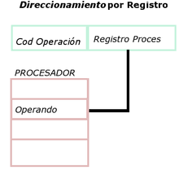

Corresponde a la unidad principal dentro de la arquitectura de un computador (dispositivo maestro por excelencia) cuya funcionalidad es la ejecución
de programas almacenados en memoria central. En palabras generales esta unidad extrae cada instrucción, la examina, ejecuta y gobierna el flujo de
ejecución de dicho proceso, i.e. determina la secuencia de micro-eventos a ejecutar.
Sus partes fundamentales son:
Unidad de Control: Extrae la instrucción en curso de memoria principal (nivel de lenguaje de máquina), hace el proceso de decodificación para
interpretar su tipo y la naturaleza de sus argumentos. Con esto provee la señalización de control para las restantes etapas de la ejecución de dicha
instrucción.
Unidad Aritmética Lógica (ALU): Dispositivo que realiza las operaciones aritméticas (sumas, multiplicaciones) o lógicas (OR, AND, NOT),
determinadas por la unidad de control, sobre los argumentos también determinados en el proceso de decodificación. Como se verá, esta unidad
se diseña utilizando dispositivos combinacionales y secuenciales (compuertas lógicas).
Registros: Pequeña memoria de alta velocidad integrada dentro de la CPU, que permite almacenar resultados intermedios, información de control
y estado en dicho proceso. Dentro de los registros más emblemáticos presentes en prácticamente todas las organizaciones de procesadores se
encuentran:
Son los registros accesibles al programador de lenguaje de máquina, los cuales son utilizados con el objeto de minimizar los accesos a memoria
principal, típicamente registros de entrada salida de la ALU. Estos registros pueden ser de uso general o específico. Por ejemplo hay registros que
sólo son utilizados como registros de direcciones, otros que sólo son registros de datos (argumentos de entrada o salida de la ALU). También pueden
existir registros de propósito general los cuales son utilizados tanto como datos como para el cálculo de direcciones. Dado que estos registros son
visibles para el programador de nivel 2, estas restricciones están estipuladas en la sintaxis de dicho lenguaje 2.
De aquí se ve que el lenguaje de máquina (repertorio de instrucciones interpretado por la CPU) esta condicionado a las restricciones de diseño de
su CPU.
Son utilizados por la unidad de control para controlar el funcionamiento de la CPU, ejemplo PC, IR, STATUS. Este último almacena los bits de
código de condición, información del estado de ejecución del proceso que permite implementar los saltos condicionales en el flujo de un proceso.
Estos bits son fijados por el hardware de la CPU a consecuencia de la última operación de la ALU.
Los más emblemáticos son:
Signo: contiene el bit de signo de la última operación.
Cero: indica cuando la operación fue cero.
Acarreo: indica acarreo de bit en la suma.
Desbordamiento: usado para indicar desbordamiento aritmético (resultado inválido, fuera del rango de representabilidad numérico).
La CPU gobierna la extracción secuencial de instrucciones de un programa desde la memoria principal (programa ejecutable). Por tanto una
instrucción se representa físicamente por una trama de bits almacenados en algún bloque de memoria. El tamaño de esta depende del diseño al nivel de
lenguaje de máquina, por ejemplo la arquitectura MIPS (SPARC5) tiene instrucciones de máquina de 32bit (4byte) independiente de su tipo.
los campos básicos se ilustran en el siguiente ejemplo:
| opcode | rs | rt | rd | adress |
Opcode: la codificación de la operación a realizar por la CPU
El proceso de ejecutar instrucciones se puede subdividir en una secuencia de pasos lógicos en un ciclo llamado extrae – decodifica – procesa ( EDP). A nivel macro se puede decir que ocurren las siguientes instancias en dicho proceso:
![]()
La segmentación de cauce, también denominada pipeline, es una técnica empleada en el diseño de procesadores, basada en la división de la
ejecución de las instrucciones en etapas, consiguiendo así que una instrucción empiece a ejecutarse antes de que hayan terminado las anteriores y,
por tanto, que haya varias instrucciones procesándose simultáneamente.
Cada una de las etapas debe completar sus acciones en un ciclo de reloj, pasando sus resultados a la etapa siguiente y recibiéndolos de la anterior.
Para eso es necesario almacenar los datos en registros intermedios. Cualquier valor que pueda ser necesario en una etapa posterior debe irse
propagando a través de esos registros intermedios hasta que ya no sea necesario.
Para conseguir la segmentación es necesario que una instrucción utilice solamente una etapa en cada ciclo de ejecución.
Ya que todas las etapas deben de tardar lo mismo en su ejecución, el tiempo de ciclo será el de la etapa más lenta, más el del retardo provocado
por la utilización de los registros intermedios. Comparando este esquema con el multiciclo, el tiempo de ciclo será más lento, pero el CPI (Ciclos
Por Instrucción) será menor, lo que provoca un aumento del rendimiento. Ya que si no tenemos en cuenta los riesgos estructurales (que pueden
provocar paradas en el pipeline), tendríamos que en cada ciclo de reloj, termina de ejecutarse una instrucción.

La principal característica de la segmentación es que su objetivo de la segmentación es ejecutar simultáneamente diferentes etapas de distintas
instrucciones, lo cual permite aumentar el rendimiento del procesador sin tener que hacer más rápidas todas las unidades del procesador (ALU, UC,
buses, etc).
La división de la ejecución de una instrucción en diferentes etapas se debe realizar de tal manera que cada etapa tenga la misma duración,
generalmente un ciclo de reloj. Es necesario añadir registros para almacenar los resultados intermedios entre las diferentes etapas, de modo que la
información generada en una etapa esté disponible para la etapa siguiente.
FUNCIONES
El objetivo de la segmentación es ejecutar simultáneamente diferentes etapas de distintas instrucciones, lo cual permite aumentar el
rendimiento del procesador sin tener que hacer más rápidas todas las unidades del procesador (ALU, UC, buses, etc.) y sin tener que duplicarlas.
Presentamos un mismo proceso con instrucciones de tres etapas, en el que cada etapa tarda el mismo tiempo en ejecutarse, resuelto sin segmentación
y con segmentación.
Es la forma más sencilla de direccionamiento, el operando está presente en la propia instrucción.
Este modo puede utilizarse para definir y utilizar constantes o para fijar valores iniciales de (inicializar) variables. Normalmente el valor se
almacena en el sistema Complemento a 2. La ventaja principal que posee este modo es que una vez captada la instrucción, no se requiere resolver
una referencia a memoria para obtener el operando, ahorrándose así pues un ciclo de memoria o de caché, en el ciclo de
instrucción. La desventaja es que el tama˜no del número está restringido a la longitud del campo de direcciones.
DIRECCIONAMIENTO DIRECTO
Una forma también sencilla es el direccionamiento directo, donde el campo de direcciones contiene la dirección efectiva del operando. Esta técnica fue común en las primeras generaciones de computadoras y se encuentra aún en diversos sistemas. Solo requiere una referencia a memoria y no necesita ningún cáculo especial. La limitación mas evidente es que proporciona un espacio de direcciones restringido.
Es similar al direccionamiento Directo, con la diferencia que el operando ahora se encuentra en un registro del sistema en lugar de estar en memoria principal. La ventaja principal de este modo es que solo es necesario un peque˜no campo de direcciones en la instrucción y no se requieren referencias a memoria. Además, el tiempo de acceso a un registro interno de CPU es menor al tiempo de acceso a memoria principal. La desventaja principal es que el espacio de direccionamiento está limitado, pues se espera que la cantidad de registros visibles al programador no sea muy grande.
AMD Ryzen 7 5800X
características:

Su frecuencia de trabajo base de 3.8GHz, 4.7GHz cuando trabaja en modo turbo, tiene un consumo aproximado de 105w, pero admite soluciones térmicas de
95w sin problemas (menos capacidad de turbo sostenido seguro) y cuenta con 32MB de memoria cache L3 de acceso directo para todos los núcleos
acompañados de una cache de segundo nivel de 4MB, 512KB por núcleo.
La unidad de control de memoria de esta generación también es similar a la de la anterior con soporte para doble canal de memoria DDR4 con capacidad
para montar hasta 128GB de capacidad en cuatro bancos. Como la generación anterior, incluso más, estos procesadores agradecen mucho las memorias
rápidas y de bajas latencias ya que muchos buses inferiores (como el Infinite Fabric o el UMC) e internos del procesador trabajan en base a la
frecuencia real de la memoria. Cuanto más rápidas, y con mejor latencia, más rápido el procesador.
El IOD es el mismo que AMD uso para toda la generación Ryzen 3000, con un proceso de fabricación de 12nm, así que dispondremos de 24 líneas PCI
Express 4.0 de las cuales 16 van dedicadas a la conectividad de tarjetas gráficas de alto rendimiento, las otras ocho se dedican a otra conectividad
como por ejemplo las cuatro líneas que usan los chipsets de esta serie.

Intel Core i7 10700
Procesador Core i7-10700 lanzado al mercado por Intel; fecha de lanzamiento: 27 May 2020. Para el momento del lanzamiento, el procesador cuesta.
El procesador está diseñado para computadoras desktop y basado en la micro-arquitectura Comet Lake.
El CPU está bloqueado para prevenir overclocking. Número total de núcleos - 8, subprocesos - 16. Velocidad de reloj máximo del CPU - 4.80 GHz.
Temperatura operativa máxima - 100°C. Tecnología de proceso de manufactura - 14 nm. Tamaño de la caché: L1 - 512 KB, L2 - 2 MB, L3 - 16 MB.
Tipos de memorias soportadas: DDR4-2933. Tamaño máximo de memoria: 128 GB.
Tipos de zócalos soportados: LGA 1200. Número máximo de procesadores en una configuración - 1. Consumo de energía (TDP): 65 Watt.
El procesador tiene gráficas integradas Intel UHD Graphics 630 con los siguientes parámetros: tamaño máximo de memoria de video - 64 GB
![]()
AMD Ryzen 7 7800X3D
El primer procesador con 3D V-Cache de AMD fue el AMD Ryzen 7 5800X3D, un modelo revisado sobre el Ryzen 7 5800X con un solo CCD donde se multiplico
la caché de tercer nivel hasta el triple de la disponible en el modelo original. Todo gracias a una arquitectura de apilamiento de memoria que
convierte a los Ryzen en algunos de los procesadores más avanzados del mercado.